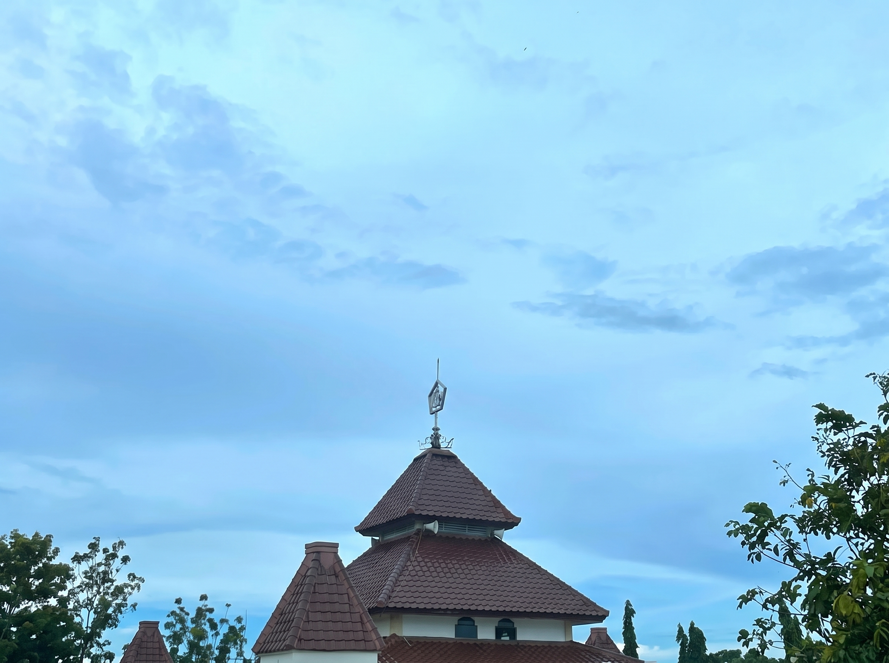

Membina generasi mahasiswa muslim yang kokoh spiritual, berakhlak karimah, dan unggul dalam keilmuan akademis di lingkungan Universitas Trunojoyo Madura.
100%
Santri Mahasiswa UTM
RFID / QR
Presensi Digital
Online
E-Perizinan Santri
Transparan
Administrasi SPP
Pondok Pesantren Mahasiswa (PPM) Darut Thalibin berlokasi strategis di kawasan Telang, Kamal, Bangkalan, Madura, berdampingan langsung dengan kampus Universitas Trunojoyo Madura (UTM).
Pesantren ini hadir sebagai wadah pembinaan keislaman komprehensif bagi mahasiswa dari berbagai fakultas. Dengan memadukan kurikulum salaf (kajian kitab kuning, tadarusan, wirid, kajian fiqih dan akhlak) dengan disiplin akademik kampus, Darut Thalibin membina santri menjadi intelektual muslim yang berwawasan luas dan berintegritas tinggi.
Ta'lim Muta'allim, Sulam Taufiq, dan kajian hadits mingguan.
Mendukung keberhasilan studi perkuliahan santri di kampus.
Darut Thalibin Telang
Landasan perjuangan dalam mendidik dan membina generasi santri mahasiswa masa depan.
"Menjadi pusat pendidikan pesantren mahasiswa yang unggul dalam integrasi ilmu keislaman, penguatan moralitas, serta kemandirian kepemimpinan berbasis teknologi dan akhlak mulia."
Membiasakan sholat berjamaah tepat waktu, wirid, tadarus Al-Qur'an, dan pengamalan sunnah sehari-hari.
Menyelenggarakan kajian kitab turats secara berjenjang guna memperdalam pemahaman fiqih, tafsir, dan tasawuf.
Mendorong santri untuk berprestasi optimal dalam perkuliahan di Universitas Trunojoyo Madura.
Menerapkan sistem informasi digital transparan untuk absensi, perizinan, dan administrasi keuangan santri.
Mendukung kenyamanan santri dalam beribadah, mendalami kitab kuning, serta menempuh perkuliahan di kampus UTM.
Kamar asrama mahasiswa yang nyaman, dilengkapi lemari pribadi, ranjang bertingkat, dan ventilasi udara yang sejuk.
Pusat peribadatan sholat berjamaah 5 waktu, wirid ratib al-haddad, kajian tafsir, dan majelis sholawat mingguan.
Koleksi kitab kuning salafiyah, kamus bahasa Arab-Inggris, serta buku referensi perkuliahan teknik dan sosial.
Akses internet berkecepatan tinggi 24 jam untuk mendukung tugas akhir, coding, dan riset akademik mahasiswa UTM.
Penyediaan menu makan harian teratur bergizi seimbang yang dikelola secara bersih oleh petugas katering pondok.
Ruang pertemuan berkapasitas 200 santri untuk seminar keilmuan, rapat organisasi, dan musyawarah bahsul masail.
Rutinitas pembinaan ibadah dan keilmuan yang dipadukan harmonis dengan jadwal perkuliahan kampus.
Sholat subuh berjamaah di masjid, dilanjutkan pembacaan wirid ratib dan tadarus Al-Qur'an 1 juz bersama asatidz.
Mendalami adab pencari ilmu karya Syaikh Az-Zarnuji agar santri memiliki etika luhur dalam belajar dan bermasyarakat.
Kajian hukum fiqih ibadah praktis, muamalah, serta batasan halal-haram dalam kehidupan modern mahasiswa.
Kerja bakti pembersihan asrama, masjid, tempat wudhu, dan lingkungan asri pesantren untuk menjaga kesehatan bersama.
Pengembangan soft-skills kepemimpinan, public speaking, retorika dakwah, dan manajemen organisasi santri.
Futsal, jogging santai, dan sarapan bersama santri lintas angkatan guna mempererat ukhuwah islamiyah.
Kolaborasi pembina asatidz dan dewan santri mahasiswa dalam mengelola operasional Pondok Darut Thalibin Telang.
Dosen Teknik Informatika Universitas Trunojoyo Madura (NIP: 1981010920060410003)
NIM: 230411100062
NIM: 240411100050
NIM: 240411100058
NIM: 240411100200
NIM: 240411100167
Transformasi digital administrasi pesantren agar kegiatan santri tercatat akurat, transparan, dan dapat dipantau orang tua.
Pencatatan kehadiran sholat berjamaah dan kajian wajib secara cepat menggunakan kartu santri RFID atau QR Code scanner.
Pengajuan surat izin keluar atau pulang asrama secara online dengan validasi terstruktur dari pengurus keamanan pondok.
Pencatatan jenis pelanggaran, kalkulasi bobot poin/kategori sanksi, monitoring status penyelesaian hukuman ta'zir per santri.
Manajemen tagihan SPP bulanan dan uang katering makan. Upload bukti bayar transfer dan verifikasi bendahara secara transparan.
Pencatatan arus kas operasional (debit/kredit di luar tagihan personal), klasifikasi beban listrik/wifi/honor, dan monitoring saldo kas.
Hak akses terintegrasi untuk 3 peran: Pengurus/Dosen (Admin), Santri aktif UTM, dan Orang Tua/Wali Santri di rumah.
Akses modul data induk santri, rekap absensi, perizinan, dan pembayaran langsung melalui portal web terpadu.
Pondok Pesantren Mahasiswa Darut Thalibin berlokasi di pusat pemukiman mahasiswa sekitar kampus UTM Telang.
Jl. Raya Telang, Perumahan Telang Indah, Kec. Kamal, Kab. Bangkalan, Madura, Jawa Timur (Kawasan Kampus UTM).
Layanan informasi perizinan dan administrasi santri:
+62 812-3456-7890 (Pengurus) →